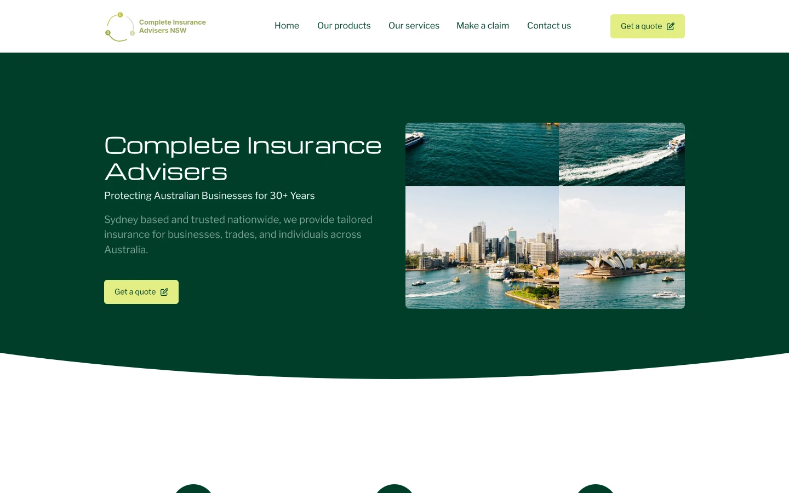
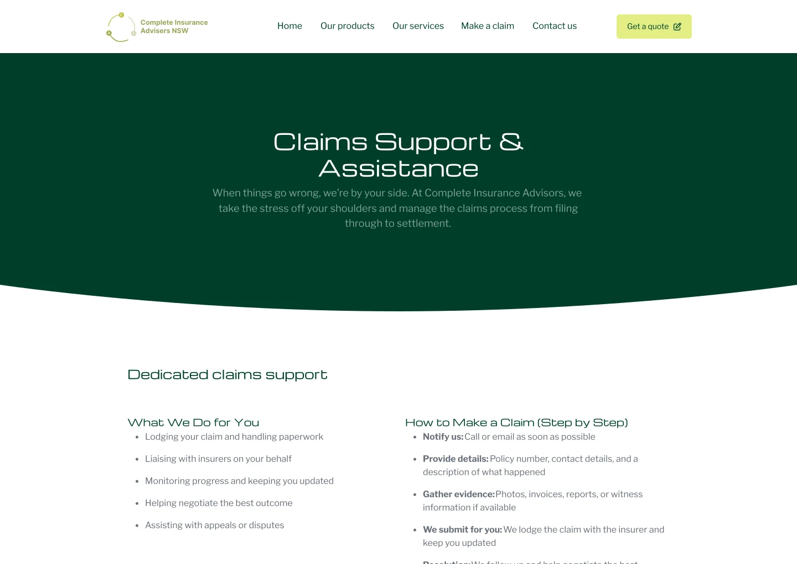

Work / 06 of 06 / CIANSW
Complete Insurance Advisors
I designed and built a website to help people understand what a brokerage could help with and where to turn for claims support.

The context
I led the website design and development for Complete Insurance Advisers NSW. The site needed to help individuals and businesses understand the brokerage’s services, find relevant cover and locate claims support.
What I learned
Competitor and SWOT analyses helped identify gaps in the market. Interviews made those gaps concrete: people found brokerage sites hard to navigate, service descriptions unclear and claims support difficult to locate.
What I built
I organised the content around clearer service categories and more direct navigation. I designed and developed the responsive interface in HTML, CSS and Bootstrap, with a content hierarchy that gave visitors a clearer path to services and support across devices.

What changed
The completed site gave the brokerage a clearer structure for its services and content. This is a qualitative outcome. I identified engagement, navigation and conversion paths as measures to track after launch, alongside user testing to find where visitors still needed help.